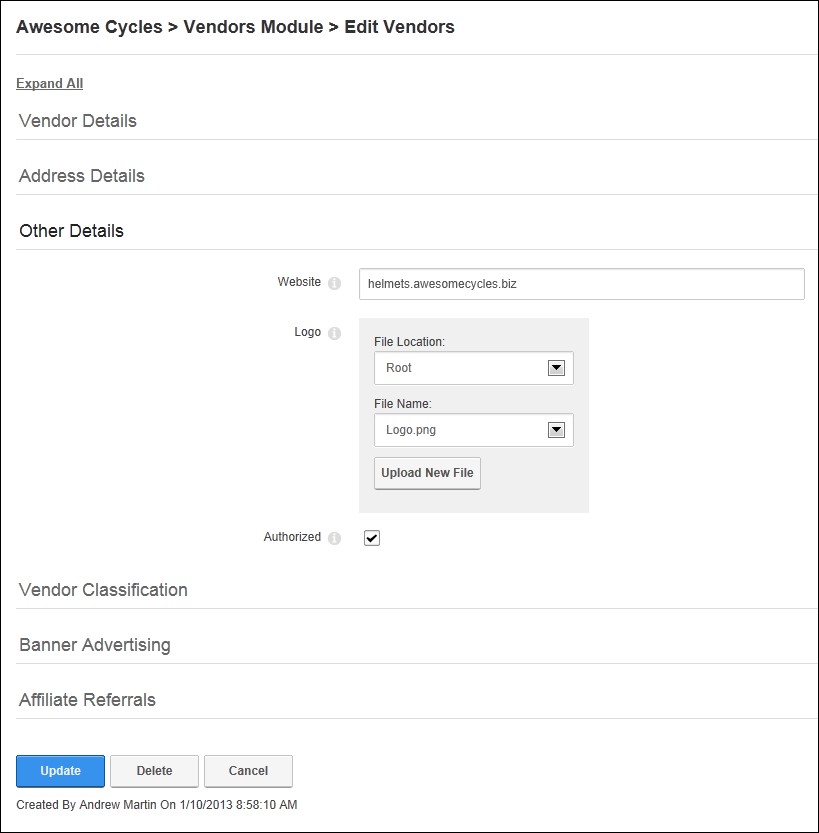

Editing/Adding Vendor Account Details
How to edit existing details and add new details to a vendor account in the Vendors module. If the vendor account has just been created a logo field, additional settings are available.
- Locate the required vendor account by selecting a filter or doing a search.
- Click the Edit
 button beside the required vendor account. This opens the Edit Vendors page.
button beside the required vendor account. This opens the Edit Vendors page.
- Edit any of the below fields as required.
- In the Vendor Details section, edit any of the required fields.
- In the Address Details section, edit/complete any the address fields.
- In the Other Details section, edit/complete any of the following optional fields:
- In the Website text box, enter the Vendor's website address. E.g. www.domain.com
- At Logo, select or upload a logo for this vendor. See the Common Tools > Link Control section for more details.
- At Authorized, if the vendor account is authorized- OR - if the vendor account is not authorized. This setting enables Administrator(s) to easily identify unauthorized vendors however it doesn't prevent current banners from displaying in the Banners module.
- Expand the Vendor Classification section to access these fields which are not implemented:
- In the Classifications box, define the classifications for the Vendor. This setting is not currently enabled.
- In Key Wordstext box, enter key words for the Vendor.
- Click the Update link.

Editing a Vendor Account